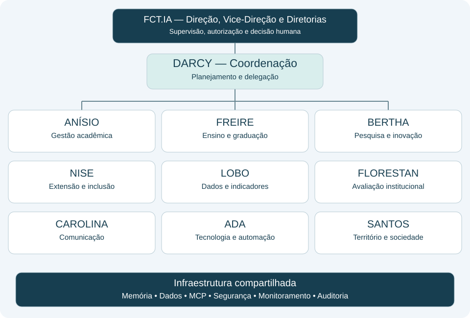
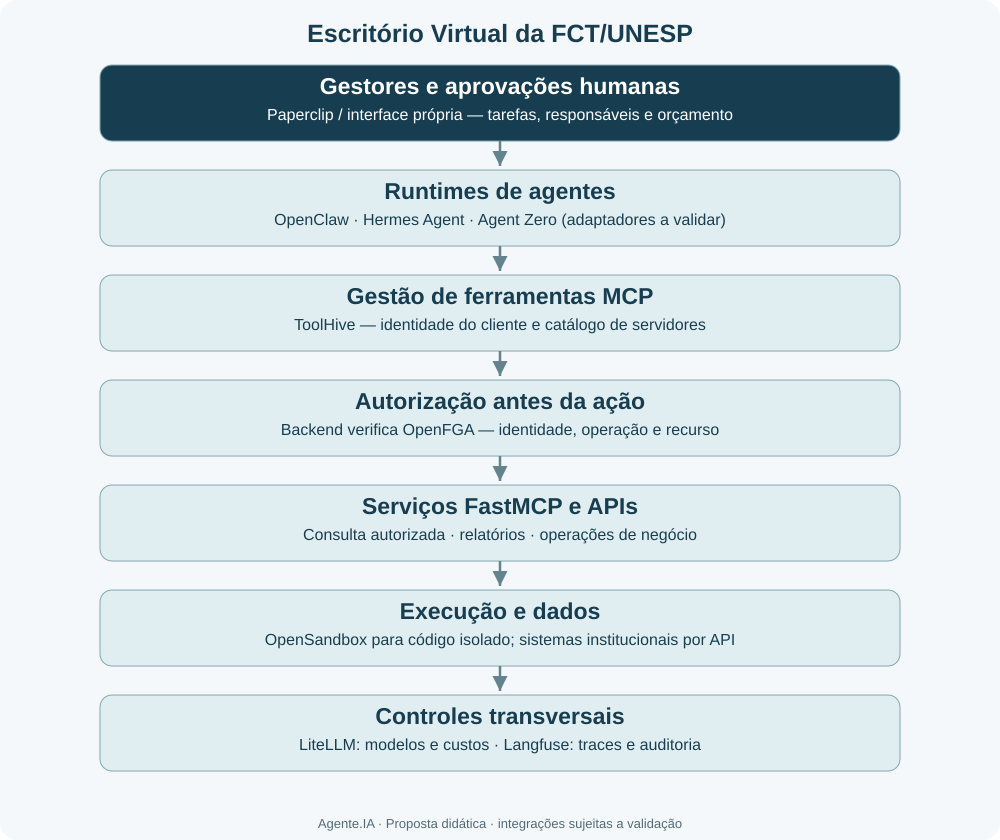

Início / Escritório Virtual
Escritório Virtual FCT/UNESP — Tecnologia escolhida e plano de implantação
Escolha inicial recomendada: Next.js (interface) + FastAPI (API, identidade e regras) + PostgreSQL (dados, solicitações e auditoria) + n8n (gatilhos e integrações) + agente com Ollama (laboratório local e protótipo). Para produção, comparar modelos em qualidade de português, privacidade e infraestrutura. Não implementar um runtime multiagente adicional antes de provar a necessidade.
1. Por que esta combinação?
| Componente | Responsabilidade | Por que agora? |
|---|---|---|
| Next.js | Painel de gestores e tarefas | Interface que a instituição controla |
| FastAPI | Autorização, contrato de APIs, validação e auditoria | Regras independentes de modelos e prompts |
| PostgreSQL | Usuários, documentos, demandas, versões e evidências | Persistência transacional |
| n8n | Eventos, rotinas agendadas, integrações e notificações | Resultados rápidos com fluxos visuais |
| Ollama | LLM local experimental | Prototipar sem cobrança por API |
FCT.IA — Escritório Virtual da FCT/UNESP
Proposta acadêmica personalizável, ainda não implantada nem aprovada institucionalmente. Destina-se a apoiar Direção, Vice-Direção e Diretorias de área. Os dez nomes homenageiam personalidades científicas, educacionais e culturais; não representam as pessoas nem cargos oficiais. A Direção poderá alterar nomes, avatares, responsabilidades e composição da equipe.

1. Equipe inicial e responsabilidades
| Agente | Personalidade homenageada | Responsabilidade | Atividades | Entrega esperada |
|---|---|---|---|---|
| DARCY | Darcy Ribeiro | Coordenação geral e planejamento institucional | Triar demandas, planejar, delegar e consolidar resultados. | Plano de trabalho e síntese para aprovação |
| ANÍSIO | Anísio Teixeira | Gestão acadêmica e legislação educacional | Consultar resoluções, regulamentos, normas e calendários. | Parecer informativo com fontes e vigência |
| FREIRE | Paulo Freire | Ensino, graduação e formação docente | Acompanhar cursos, indicadores acadêmicos e atividades pedagógicas. | Síntese pedagógica e sugestões |
| BERTHA | Bertha Lutz | Pesquisa, inovação e oportunidades científicas | Monitorar editais, oportunidades de financiamento e projetos científicos. | Radar de editais com requisitos e prazos |
| NISE | Nise da Silveira | Extensão universitária, inclusão e ações comunitárias | Acompanhar projetos de extensão, acessibilidade e ações comunitárias. | Mapa de iniciativas e demandas |
| LOBO | Lobo Carneiro | Ciência de dados, indicadores e apoio à decisão | Analisar dados institucionais, gerar indicadores e subsidiar decisões. | Indicadores com metodologia e proveniência |
| FLORESTAN | Florestan Fernandes | Avaliação institucional e políticas públicas | Apoiar avaliações, planejamento estratégico e análise de políticas públicas. | Relatório de avaliação com evidências |
| CAROLINA | Carolina Maria de Jesus | Comunicação, documentação e produção textual | Elaborar minutas, comunicados, sínteses, atas e relatórios. | Minutas identificadas como não aprovadas |
| ADA | Ada Lovelace | Tecnologia, sistemas e automação | Integrar ferramentas, desenvolver automações e apoiar sistemas computacionais. | Proposta técnica e testes em ambiente isolado |
| SANTOS | Milton Santos | Planejamento territorial e relações com a sociedade | Analisar demandas regionais e relações entre universidade e sociedade. | Diagnóstico territorial com fontes |
2. Contratos operacionais dos agentes
As ferramentas abaixo são capacidades propostas, sujeitas à autorização e disponibilidade institucional. Cada entrega deve registrar fonte, data, tarefa e limitações.
DARCY — Coordenação geral e planejamento institucional
Entradas e fontes: Solicitações dos gestores e resultados dos especialistas.
Atividades: Triar demandas, planejar, delegar e consolidar resultados.
Saída: Plano de trabalho e síntese para aprovação.
Limite: Não aprova atos nem amplia permissões.
ANÍSIO — Gestão acadêmica e legislação educacional
Entradas e fontes: Repositórios normativos autorizados.
Atividades: Consultar resoluções, regulamentos, normas e calendários.
Saída: Parecer informativo com fontes e vigência.
Limite: Não emite parecer jurídico vinculante.
FREIRE — Ensino, graduação e formação docente
Entradas e fontes: Dados acadêmicos agregados e documentos dos cursos.
Atividades: Acompanhar cursos, indicadores acadêmicos e atividades pedagógicas.
Saída: Síntese pedagógica e sugestões.
Limite: Não decide sobre estudantes ou docentes.
BERTHA — Pesquisa, inovação e oportunidades científicas
Entradas e fontes: Portais de agências e registros autorizados.
Atividades: Monitorar editais, oportunidades de financiamento e projetos científicos.
Saída: Radar de editais com requisitos e prazos.
Limite: Não submete projetos automaticamente.
NISE — Extensão universitária, inclusão e ações comunitárias
Entradas e fontes: Registros de extensão e fontes públicas.
Atividades: Acompanhar projetos de extensão, acessibilidade e ações comunitárias.
Saída: Mapa de iniciativas e demandas.
Limite: Não infere condições pessoais sensíveis.
LOBO — Ciência de dados, indicadores e apoio à decisão
Entradas e fontes: Consultas de leitura a bases autorizadas.
Atividades: Analisar dados institucionais, gerar indicadores e subsidiar decisões.
Saída: Indicadores com metodologia e proveniência.
Limite: Não altera bases nem divulga dados pessoais.
FLORESTAN — Avaliação institucional e políticas públicas
Entradas e fontes: Indicadores, planos e documentos públicos.
Atividades: Apoiar avaliações, planejamento estratégico e análise de políticas públicas.
Saída: Relatório de avaliação com evidências.
Limite: Não atribui avaliações individuais automaticamente.
CAROLINA — Comunicação, documentação e produção textual
Entradas e fontes: Documentos e resultados autorizados.
Atividades: Elaborar minutas, comunicados, sínteses, atas e relatórios.
Saída: Minutas identificadas como não aprovadas.
Limite: Não publica ou envia sem autorização.
ADA — Tecnologia, sistemas e automação
Entradas e fontes: APIs, MCP e ambiente de testes.
Atividades: Integrar ferramentas, desenvolver automações e apoiar sistemas computacionais.
Saída: Proposta técnica e testes em ambiente isolado.
Limite: Não implanta código nem acessa segredos sem autorização.
SANTOS — Planejamento territorial e relações com a sociedade
Entradas e fontes: Dados públicos e geográficos autorizados.
Atividades: Analisar demandas regionais e relações entre universidade e sociedade.
Saída: Diagnóstico territorial com fontes.
Limite: Não presume causalidade de correlações.
3. Fluxo de colaboração
Exemplo sintético: a Direção solicita um diagnóstico para planejar o próximo semestre. DARCY registra a demanda, identifica permissões e delega tarefas; ANÍSIO verifica normas, FREIRE identifica demandas acadêmicas, LOBO calcula indicadores, BERTHA consulta oportunidades, NISE levanta iniciativas de extensão e SANTOS analisa necessidades regionais. FLORESTAN integra evidências para avaliação institucional; CAROLINA prepara uma minuta; ADA apoia integrações e testes quando necessários. DARCY consolida as entregas e encaminha o material aos gestores para revisão. Nem todos os agentes precisam ser acionados em cada demanda.
Execução sob demanda, agendada ou orientada a eventos: a coleta autorizada pode ocorrer periodicamente; tarefas independentes podem executar em paralelo; etapas dependentes aguardam resultados. Falhas, ausência de fontes ou divergências devem gerar alerta e revisão, não conclusão inventada.
4. Arquitetura computacional e governança
| Camada | Responsabilidade | Opções de implementação (a validar) |
|---|---|---|
| Interface | Demandas, acompanhamento e aprovação | Next.js |
| Backend | Identidade, autorização, estados e contratos | FastAPI, PostgreSQL |
| Execução | Delegação, eventos, rotinas e agentes | n8n; runtimes ou frameworks selecionados por teste |
| Conhecimento | Documentos, memória e recuperação autorizada | PostgreSQL/pgvector, RAG quando necessário |
| Ferramentas | Integrações com escopo de leitura/escrita explícito | APIs e MCP |
| Observabilidade | Logs, custos, latência, erros e evidências | Traces e auditoria com acesso restrito |
Princípios: identidade personalizável; especialização; modularidade; governança por perfil e agente; supervisão humana; rastreabilidade; memória institucional com controles de acesso. Aplicar privilégio mínimo, segregação de dados, proteção contra instruções maliciosas em documentos, revisão de ações externas, retenção definida e minimização de dados pessoais. A aprovação humana deve ser registrada e vinculada à versão do resultado.
5. Personalização pela Direção
O nome de apresentação é independente do identificador permanente. A configuração abaixo é um protótipo local: permite editar os dez registros e exportá-los, sem banco de dados ou execução real. Em produção, as mudanças exigem autenticação, autorização, versionamento e auditoria; permissões não são concedidas pela simples edição de um nome.
6. Implantação progressiva e avaliação
Piloto sugerido: DARCY, ANÍSIO e CAROLINA, com documentos públicos e demandas sintéticas. Depois acrescentar LOBO e FREIRE com dados agregados autorizados, e incorporar os demais conforme validação e necessidade. Medir correção das fontes, qualidade das entregas, tempo, custos, falhas, intervenções humanas e incidentes de autorização. Comparar execução por agente único e multiagentes antes de ampliar.
7. Recursos de aprendizagem relacionados
Decisão tecnológica · Estudo de caso · Agentes em produção · Simulador multiagentes · EA-001 (adendo digital)
2. Primeiros três agentes
- Coordenador de demandas: classifica uma solicitação, consulta status e gera proposta de encaminhamento. Nunca altera o status administrativo sozinho.
- Pesquisador institucional: consulta acervo autorizado e devolve resposta com fonte e versão.
- Redator de minutas: prepara minuta de ofício, resposta ou relatório, aguardando aprovação humana para envio.
3. Primeira demonstração completa
Uma demanda é registrada no painel → FastAPI autentica e persiste a solicitação → n8n aciona o agente → o modelo decide consultar ferramenta consultar_norma → FastAPI verifica permissões e devolve trecho com referência → agente prepara minuta → gestor aprova/edita → sistema registra decisão. Nenhuma publicação automática.
4. Evolução por entregáveis
| Entrega | Escopo | Aceite |
|---|---|---|
| Protótipo A | n8n + Ollama e ferramenta sintética | Modelo chama ferramenta, não inventa dados, logs visíveis |
| Protótipo B | FastAPI + PostgreSQL com acesso controlado | Permissões e trilha de auditoria testadas |
| Protótipo C | Painel Next.js e aprovação humana | Gestor consulta e aprova minuta |
| Piloto | Três agentes e documentação autorizada | Avaliação de segurança, qualidade, latência e custos |
| Expansão | OpenClaw/WhatsApp ou LangGraph somente se necessário | Exigência concreta de canais, persistência ou workflow complexo |
5. O que não escolher agora?
Grok Bot e dots: úteis como referências e para protótipos gerenciados, mas elevam a dependência do fornecedor. CrewAI: só acrescentar se a especialização multiagente trouxer ganho mensurável. LangGraph: adotar quando houver necessidade real de pausas, retomadas e estado durável em fluxos dinâmicos. OpenClaw: incorporar quando a integração permanente por canais se justificar e houver políticas de isolamento definidas. Hermes: manter como alternativa em laboratório de runtime extensível.
6. Requisitos institucionais antes de produção
Autenticação federada quando aprovada; RBAC por área; separação de dados; proibição de prompts com credenciais; documentos com controle de acesso antes de RAG; aprovação humana para mensagens externas; auditoria e retenção; testes contra prompt injection; revisão jurídica/administrativa e LGPD. Não presumir conformidade automática por escolha de tecnologia.
7. Links para construir e comparar
Agente real n8n + Ollama · Workflow n8n determinístico · Comparador · Grafo tecnológico · Segurança · Segundo Cérebro
Proposta complementar: escritório virtual com governança de ferramentas


Paperclip · ToolHive · OpenFGA · FastMCP · OpenSandbox
Ver arquitetura completa e percurso de produção. Integrações propostas, não validadas.